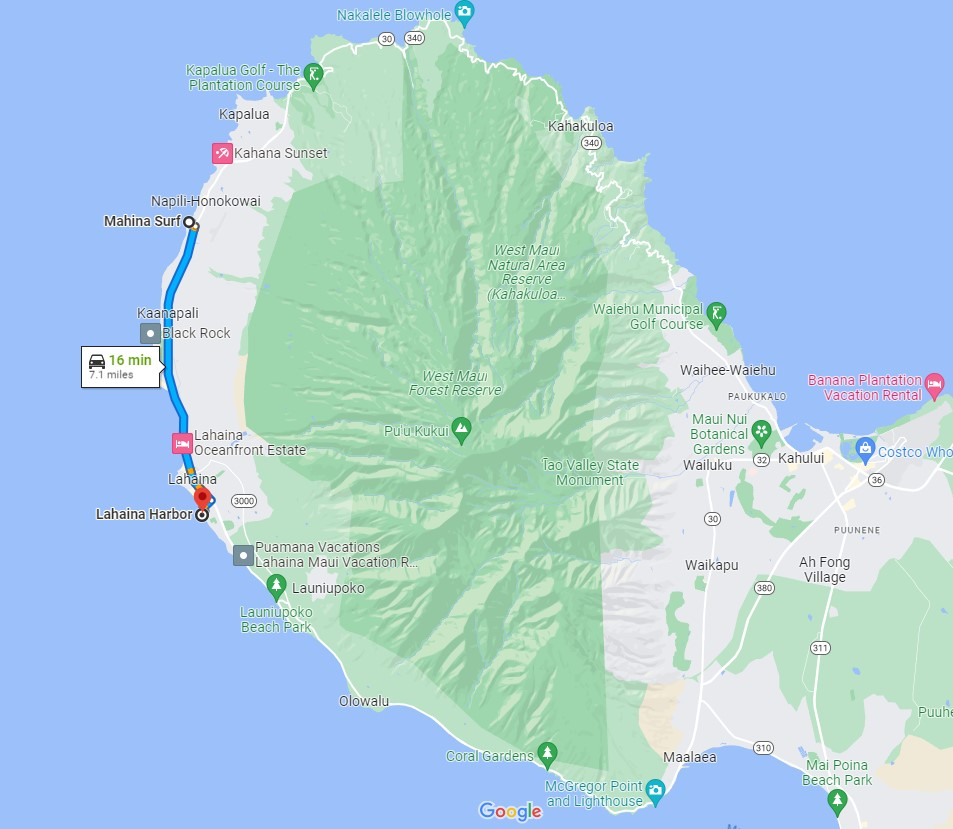
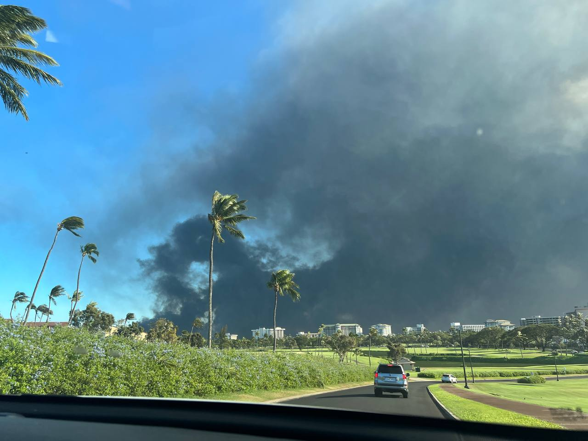

I created this website as a little side project before departing on vacation to Maui. I figured that it’d be fun to log the events of my trip and share them here when I returned. Little did I know then that I’d be writing my perspective of a historically significant event.
By sharing these observations as thoroughly as possible, I hope to help provide some answers for those who were there, and create a better understanding of what occurred for those who were not.
My purpose for writing now has expanded. Though I want to tell you about what I saw and experienced, what I want to convey even more is my deep appreciation for the immense generosity of the Maui people.
Wikipedia defines Aloha as “the Hawaiian word for love, affection, peace, compassion and mercy.” ʻOhana is a Hawaiian term meaning "family".
For a week in Maui, I saw the strength and consolidarity of the island 'Ohana and felt the inviting embrace of the Aloha spirit.
Tuesday, August 8, 2023.
We woke up to no electricity in our rental unit. We were staying near Napili in Maui, only a few miles north of Lahaina.
Being tourists, we had very few supplies. Incredibly, we actually traveled toward Lahaina during the fire in search of food; not because we were being insensitive in the face of catastrophe but because the ambiguity of the situation on the ground left us totally ignorant to the significance of the event occurring before us.

I want to share with you an account of the events that led to that moment and followed it.
But, more, I want to convey the immense generosity that I experienced from the kind people of Maui.
Sunday, August 6, 2023.
A friend and I traveled to Maui on Sunday, August 6, 2023. She had previously lived on the island. She even had family who had only recently relocated from the Lahaina area. Her connection to the area was strong, and she was excited to show me the town and island on which she has so many cherished memories.
This was my first trip to Hawaii.
Immediately, Maui’s tropical beauty exceeded my lofty expectations.
Exotic flowers that I had only seen previously in pots and gardens grew naturally along the path to our rental unit. Our backyard was the Pacific Ocean, orientated in the direction of the setting sun. A short trail in one direction revealed a small secluded beach. The other direction - the nesting spot for sun-bathing sea turtles, many times older than the U.S. state in which they were resting.
Immediately, I felt like I had discovered the place I was meant to be. Moved not only by the visual allure of it all, but also by an island that provoked my appreciation for the outdoors. In other places, I occasionally feel ostracized because I prefer outdoor activities, don't drink and am not the most socially active. In Maui, outdoor activities are the social activities! I couldn’t resist the yearning notion that this could one day be home.
If the natural beauty alone wasn't convincing, the local cuisine added a compelling argument. After exploring Whalers Village in Kaanapali, we returned to our rental property and ordered delivery. The delivery was apparently straight from heaven and referred to locally as Lau Lau. 🤤
Maybe one of the tastiest things I’ve ever eaten.
But the theme that I most want to make apparent to you, and the one that most resoundingly resides with me today, is the gracious spirit of the Maui people. Beyond the food and even beyond the unique and stunning natural scenery of the state, Hawaii - to me - is defined by its spirit of Aloha.
Monday, August 7, 2023.
That Aloha spirit perhaps hit us first Monday morning when we visited Hawaiian Village Coffee. Here, we were chatted up as if we were locals. By the locals! We picked up a store punch card, joking about how quickly we were going to fill the card up on purchases of macadamia nut lattes.
We immediately seized the beautiful though choppy day, visiting Kaanapali Beach, where I got to snorkel for the very first time. Below us, we saw schools of fish, urchin, eels, a reef shark (!) and even scuba divers. I lazily floated on a boogie board and would have happily spent the rest of my life on the surface of that turquoise-shaded liquid glass.
Though we didn't capture any pictures this time, we picked up an underwater camera for next time. I had discovered a new favorite activity and planned on much more snorkeling throughout the week.
For tonight, though, our plan was to allow the beautiful Monday afternoon drift lazily into evening during our scheduled sunset sail from Lahaina Harbor. Walking from the pick-up point at the local general store, I was introduced for the first time to historic Front Street. As we passed the Banyan Tree, with a mixture of both nostalgia and wanderlust, my friend shared with me both memories and dreams.
We were embraced again by the Aloha spirit as we stepped aboard Sail Maui’s Paragon catamaran. The captain and crew were kind and jovial.
I can’t pinpoint the exact words that made us feel so welcomed. It’s more of a sense that we could feel. That feeling was so strong that the Sail Maui Instagram page was one of the first I checked upon learning of the Lahaina devastation.
We floated peacefully toward the setting sun; behind us, the sleepy nook of the quaint Lahaina Harbor.

Meanwhile, another visitor was traveling toward Hawaii, though many hundred of miles south.
Hurricane Dora
No one and I mean no one, was talking about Hurricane Dora on Monday night. Though the wind had increased throughout the day and had become quite blustery, Mother Nature was hardly presenting a warning for what she had in store.
Back in the rental unit, the volume on our t.v. went on the fritz. The source of the problem was a poorly performing HDMI cable. As we went to bed Monday night, that was our only worldly concern. We would fix that tomorrow, we thought.
Tuesday, August 8, 2023.
Now, to understand how our Tuesday worked, and to better understand why conditions eventually grew so calamitous, it's essential to know that there are very few passable highways in Maui. From our rental property, we basically had one road (highway 30, the Honoapiʻilani Highway) and two options - go left toward Kapalua and eventually north and around the perimeter of a volcano, or go right and head toward Lahaina. And that’s it.
Waking up to no electricity on Tuesday, we decided to head left - toward Napili in search of coffee. We quickly discovered that there was no power there either, nor in Kapalua. So, we kept driving. Highway 30 eventually becomes Hawaii Route 340, the Kahekili Highway; also occasionally referred to as Maui’s "Death Road".
For the next two hours or so, we saw maybe a total of three other cars on the road. We had no clue the explanation for the desolation. It was early in the day and we figured this might be the reason why. But that, along with winds that nearly blew us off the cliffs, was lending to legitimate concern.
Despite the conditions, the drive was an extraordinarily scenic one. The road was narrow but easily passable.
It scissored through the lush green forests and along towering abutments that protruded into the ocean and dropped steeply to where the waves crashed onto rocky black and tan sand beaches. The sheer grandeur took away whatever remaining breath the wind hadn’t already stolen.
Now, here comes the crazy part. In retrospect, this really stings. We actually made it to Kahului. Where the city was mostly unaffected by the fires throughout the week. Power was running. People were going about their typical daily activity. In Kahului on Tuesday, there was no indication that warned us not to return. So, we actually drove from the safety of Kahului back to Lahaina!
One of the soon-to-be many seemingly innocuous decisions that would actually have critical implications.
At the time, our impression was that the biggest concern in West Maui was the power outage. The fire was an afterthought and, besides, in Lahaina, the fire had been reported as contained. We would have never left Kahuliu had we known more.
No one knew.
The events that are about to transpire were, per my observation, the result of the alignment of several unique hazards that alone could have been mitigated but, together, resulted in devastation.
The surreal but important fact to keep in mind is that folks in West Maui had no idea what was going on in Lahaina on Tuesday. Or Wednesday, for that matter. We had no power and spotty cell service.
Knowing what I know now, the actions that we took on Tuesday seem awfully reckless. It's really chilling now to think about how unaware we were of our predicament then.
We arrived in Lahaina from Kahului around noon, to a big mess. The wind had ripped down power lines throughout the town and police were blocking intersections to detour traffic around these obstacles.
I recall that the intersection onto Highway 30 was closed because I remember seeing the same Starbucks multiple times while following other lost tourists, hopelessly traveling in aimless circles around shopping center parking lots.
We noticed a rough, partially paved side street that headed the direction of our rental unit. We figured this might provide escape. The road - a stretch to call it that - ran along the eastern border of the the residential area, sort of like a shelf between Lahaina and the vast, windswept grass fields
The intersections in town were chaotic. People were already lined up stationary on the highway trying to depart Lahaina. At the time, it seemed that the only risk to attempting that side street was potentially a waste of time.
Traveling down that path was a bit agonizing. We had no GPS, so no indication where it might lead. Conditions were deteriorating. The road was rough and the dry wind whipping off the fields was growing hazy and hot. About the only company we saw on that road were two vehicles that nearly collided. One was turning around while the other rushed by in a panic; panic that seems reasonable to me now, but was confusing at the time.
After bumping along the trail for about 15 minutes, we reached a closed gate blocking an impassable route. Disappointed, we turned around, resigned to join the others in the traffic queues in Lahaina.
On the way back, though, we discovered a little passage back to the residential area. The entrance was guarded by a steep abrupt bump, and it looked daunting enough that I thought it might see-saw our Kia. More out of frustration rather than fear, we decided it was worth a try. Surprised but relieved, our little rental earned its offroad badge. The bump burped us back into the residential neighborhood with an easy route from there to the highway and back to our rental unit.
That fortuitous entry point back into the Lahaina neighborhood saved us significant frustration - at least - and may have even saved our lives (though, admittedly, I feel like that's overstating it).
In a few short hours, the area where the intersection had been blocked, where traffic was queued, and this residential area would all be consumed by fire.
I’m not sharing the details of our seemingly absurd decision-making to self-report my own naivety. Rather, I think some of you see the fatal consequences of the Maui fire and say, “That wouldn’t happen to me.” How could anyone ever get trapped in a fire?
This is how.
I’m haunted by the notion now that a seemingly trivial decision had such unknowingly critical stakes. It's easy to say that we'd know how to react in a life or death situation. But what if you don't know you're in one?
Grateful for the escape we made from Lahaina, we returned to our rental unit. It eventually occurred to us that we had not eaten since the sunset sail on Monday. The local grocery store was open but there was a long line and we didn’t make it in time to be allowed to join the queue. The property on which we were renting had few resources, so we decided to head toward the resorts in Kaanapali, hoping we might be able to salvage something to eat from a hotel store.
Indicative of the extent of our ignorance on Tuesday, we actually headed back toward the fire. Though we saw the smoke, we thought it was like the wildfires we had seen back in California; always threatening but usually contained before causing substantial damage. Equal parts complacent and hungry, we weren't suited to make great decisions.
Only in retrospect now do we recognize that we were actually traveling toward the fire that was devouring historic Lahaina town.
While my friend ran inside a Kaanapali resort, I was struck for the first time - and the only time during the entire day - by a sense of peril. The winds now seemed hurricane-force. Structures were being damaged. The absence of rain was spooky. Gusting winds blistered the air with debris and smoke. For the first time, I experienced a sense of foreboding.
There wasn't much at the hotel for us to come by, but we were able to purchase a few bags of macadamia nuts. With these and our good health, we returned back to the safety of the rental property.
As Tuesday came to an end, we finished our day’s only meal - a pancake and a handful of nuts. Our issues, however, were mere inconveniences and not the tragedies being then encountered by others.
The lack of communication in West Maui created a disturbing dichotomy. While Lahaina burned, many of us went about our business. I watched the sunset. Kids played in the pool. We simply had no idea the substantial nature of what was occurring mere miles down the road.
Wednesday, August 9, 2023.
We continued to be mostly unaware of the severity of the event that was occurring in our vicinity. I spent a lot of Wednesday in my rental car, charging my phone. The entire time, I scanned the radio. Though regular updates came from 92.9 (which called itself 93.5), it was the same recorded status played on repeat. I can practically recite it verbatim: 6 fatalities. All remaining wounded were treated. Roads were closed but a shuttle was running from Kaanapali to the airport in Kahului. Throughout the day and into the night, this same report. Over and over.
Apparently, things weren't great, but they also didn’t sound much different from wildfire reports familiar from back home.
Sitting in the car, we saw another tourist return to our rental complex with grocery bags. At this point, food and toiletries may as well have been gold. He informed us that a convenience store down the street was open. We headed there and joined the queue.
Where frustration could be rightfully expected, the Aloha spirit wouldn’t be denied. Though waiting for hours to enter, everyone was civil. A local Maui resident in front of us in line allowed us to join her party. So, we got to enter the store a minute or two early due to her graciousness; maybe a small token but it had an outwardly huge and lasting impact.
It was only on Wednesday night that I really began to get a sense of what may have occurred in Lahaina, though I chose not to believe it. To be honest, I never really did believe it. Until I saw it.
The intermittent texts that I was receiving that evening started to provide some clarity. But the thing that I now realize about those texts is that the senders understood what was going on in Lahaina, but they totally misunderstood the conditions elsewhere in West Maui. While I never felt in immediate danger, I constantly felt trapped. Yet, some of the texts made it seem like we could leave - if we just tried harder. I promise you that was not the case. At least not Tuesday night. Wednesday was more permissible, but with no consistent communication, no one was certain roads were even open.
Meanwhile, my Mom had managed to acquire us a new flight for Thursday night. Her assistance throughout this ordeal was steady and necessary. And for it, I’ll always be grateful.
Thursday, August 10, 2023
Though the fire occurred in Lahaina on Tuesday, I swear to you that it wasn’t until the drive to the airport on Thursday that I actually believed it.
At the time of writing, the destruction from the fire has been widely reported. So, I’ll only add this: I’m an Army combat veteran and this has me shook.
From the safety of California from where I currently write, I am learning more and more about what happened in Lahaina. As I do, my own despair increases. But so also does the connection that I feel to the island and its people.
My grief is matched by my enormous fondness for the people of Maui. Nowhere did this fondness grow more than in the Kahului Airport, where I was embraced by the hug of the Aloha spirit.
Because our flight was delayed overnight until Friday, we couldn’t check our bags. Because we couldn’t check our bags, we couldn’t pass through security. Since we had already returned our rental car and hotels offered no availability, we planned to camp outside ticketing at the airport for the night.
My bleak expectation for the evening was immediately brightened by a stream of volunteers. Local Maui folks brought in blankets, (the best) pineapple (ever), water, toiletries, and so much food that we had to eventually turn away offerings. With only many many sincere thank you's from us in return.
Though a visitor, while at that airport, I felt as if I was a member of the ʻOhana.
Though the most significant events during my visit to Maui were awful, the feeling that I am left with now is a deep appreciation for the overwhelming hospitality of the Maui people.
I wrote all of this because I can not thank the people of Maui for their generosity enough. To return my appreciation, I share the details as I know them to help encourage understanding for those who weren’t there, and perhaps help answer some questions for those who were.
In Lahaina, the worst case provoked the best in people. I've learned of families desperately diving into the thrashing ocean to escape the flames. Many were protecting families in an astounding demonstration of profound love. These events remind me in harsh ways of my combat experience. New heroes join Army Rangers and Green Berets in a hallowed pantheon. These are the protectors, first responders, and volunteers of Maui. Their stories are challenging to hear, but I seek to learn of them. These folks must be celebrated. And their astonishing stories of perseverance and survival etched into the historical retelling of this tragic event.
In other videos, the cracked voices of those trapped, desperately trying to escape the flames ravaging Lahaina send chills down my spine. I hear the fear in their voice, but I feel it coming from inside of me. The sense of familiarity is agonizing.
I want to help. But, I feel helpless. Given the emotional significance of the events, I cling to a unique connection to the island. But the truth is, I’m an outsider. Though I had a sense of temporary inclusion with the ‘Ohana, I know I can’t claim permanent membership. I understand this. So, from my space, I do what I can. Donate. Advocate.
In time, when it's appropriate, I'll return to Maui and contribute to its economy as a tourist. If there is anything I can do more directly in the interim, I truly offer my support. I intend to return regularly to participate in Lahaina’s restoration, to help as I can as it is built back the right way - the way the people of Maui want it to be.
Please consider donating. There is no deadline for providing support. The need on Maui will be long-lasting. Those who lost the most weren’t the tourists, but the local residents down there who work to make our vacations so memorable. Others were robbed of places of retirement that they had invested their entire lives in. People lost their loved ones to fire. Unthinkably awful. These people need our financial assistance. I choose to donate to local GoFundMe accounts that I trust, but many options are available. Please choose one (or many!) and lend your support.
We need to demonstrate to Hawaii that the sense of community that they know so well on their island thrives beyond their shores.
Finally, I can not complete my own story of Maui, 2023 without acknowledging Alyssa, my friend and constant companion throughout all of this. I’ll forever respect your refusal to give in to frustration when everything around us seemed to demand it. That we could maintain levity as appropriate surely made the events more tolerable. That there are so few legitimate events in one’s life that really change and define it, I’ll always cherish the shared bond of having experienced this one with you.
I’ll see you soon, Maui. ❤️
Guessing the number of slats on the airport ceiling :)